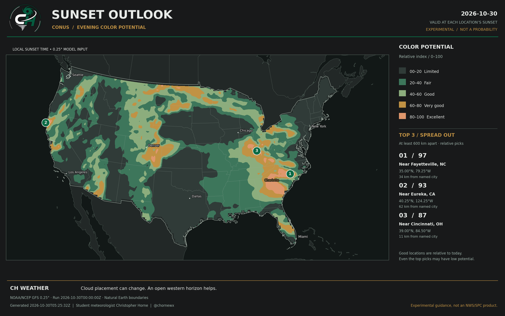

DAILY / EXPERIMENTAL SUNSET OUTLOOK
The evening,
in color.
A national look at where cloud and horizon conditions may favor a colorful sunset. Real forecast data, with the uncertainty kept visible.
YOUR LOCATION / SAME FORECAST GRID
Find your sunset outlook.
Search within the contiguous United States. This is a model-grid estimate, not a street-level forecast.
Location search: Open-Meteo / GeoNames. Search text is sent to the geocoder only when you submit it. Coordinates from “Use my location” stay in your browser; the sunset score is read from our published grid.
CH WEATHER / DAILY EXPERIMENTAL GUIDANCE
Tonight’s sunset potential.
Loading the latest outlook and its valid date…

Experimental 0–100 potential index, not a probability or an official NWS/SPC forecast. NOAA/NCEP GFS guidance at each location’s sunset; Natural Earth boundaries. Cloud placement, smoke, and local obstructions can change what you see. Top picks are at least 600 km apart.
HOW TO READ THIS OUTLOOK
Potential, with perspective.
This experimental index uses NOAA/NCEP GFS low-, middle-, and high-cloud cover and surface visibility. It samples the forecast at each grid point’s approximate sunset time, then considers cloud obstruction 80, 160, and 240 km toward the setting sun.
Some mid- and high-level clouds can catch warm light. Low clouds or a blocked sunward horizon can reduce the view. The score favors a mix of upper clouds and open sky, with a smaller visibility adjustment.
What the numbers mean
The 0–100 index ranks modeled conditions. It is an uncalibrated heuristic, not the percentage chance of a beautiful sunset. The three numbered picks are the strongest modeled grid points at least 600 km apart; a nearby city is a geographic reference, not the exact forecast point.
What it can miss
The model does not resolve every cloud, its optical thickness, smoke chemistry, terrain, or buildings. Sunset timing assumes a flat horizon and standard refraction. A 2400 × 1500 image does not add detail beyond the native 0.25° weather grid.
Updates and dates
Updates are scheduled for 8 a.m. America/New_York, including daylight saving time. GitHub Actions can run late, and generation and deployment take additional time. Always check the forecast’s valid date. A failed update leaves the last successful outlook available with its original timestamp.
Science background: NOAA: The Color of Clouds · NOAA solar equations · NCEP GFS documentation · Natural Earth boundaries. This is a CH Weather product, not an NWS/SPC outlook.